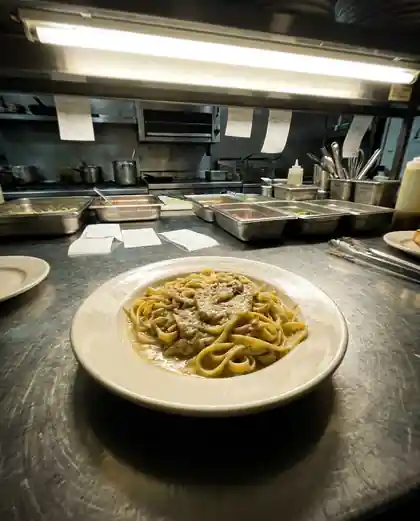
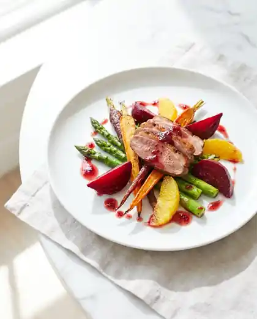

Las Vegas
Food photography that survives the crop.
Commercial food photography for Las Vegas restaurants, chefs and food brands. One directed shoot, delivered in every format your menu, your delivery listings and your feed actually need.
The problem is not your food.
Most Las Vegas restaurants have photographs. They were taken on a phone, under the ceiling light, after service, and they were framed for nothing in particular. Then a delivery app crops them to a square, a feed crops them to a vertical, and the site stretches them to a banner. The same picture gets cut three different ways by three systems that never saw the plate.
That thumbnail is frequently the only image a customer sees before deciding whether to order. It is doing more selling than the menu copy underneath it.
What a directed shoot delivers.
A shoot is planned as a library, not as a photograph. The deliverable sizes are reserved in the frame while the camera is still on the set, rather than cropped in afterwards, so nothing important sits where a platform is going to cut.
- Square for delivery apps and listing thumbnails.
- Vertical for Instagram, TikTok and Stories.
- Wide for the site banner and section headers.
- Portrait for printed and digital menus.
- Negative space held where paid copy will land.
One production. Every channel. The dish reads as the same dish everywhere it appears.
The same dish, two treatments.
Below is concept work produced in house. The difference is not the food and it is not the camera. It is direction: how the plate is built, where the light comes from, and what the frame is reserved for.


A chef is the quality gate.
Apex Content Studio is led by a working chef. Every frame of food is judged first on whether the food is right: the sear, the sauce, the steam, the way heat actually behaves under a hot light. Styling that photographs well but would never leave a pass is a failed frame here.
Most content studios can light a plate. Fewer can tell you the plate is wrong.
Who this is for.
- Independent and chef-owned restaurants
- Restaurant groups with several locations that need one consistent look
- New openings that need a full library before the doors open
- Bakeries, coffee roasters and dessert programs
- Caterers and private-event operators
- Packaged food brands with retail or e-commerce listings
What we do not promise.
We do not guarantee results, covers or revenue. Photography is one input among many and anyone telling you otherwise is guessing with your money. What we sell is production capacity and consistency: assets built correctly, delivered on a schedule, in the formats your channels actually use.
Apex Content Studio is open in Las Vegas and taking projects now.
Apex Content Studio
Apex Hospitality Group LLC
Las Vegas, Nevada
hello@apexhospitalitygrouplv.org
(702) 480-9198
Monday–Friday, 9am–6pm
Las Vegas, Henderson, North Las Vegas and Summerlin. Packaged goods work ships anywhere.